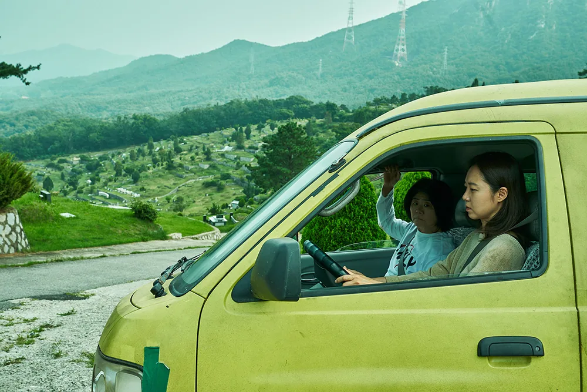
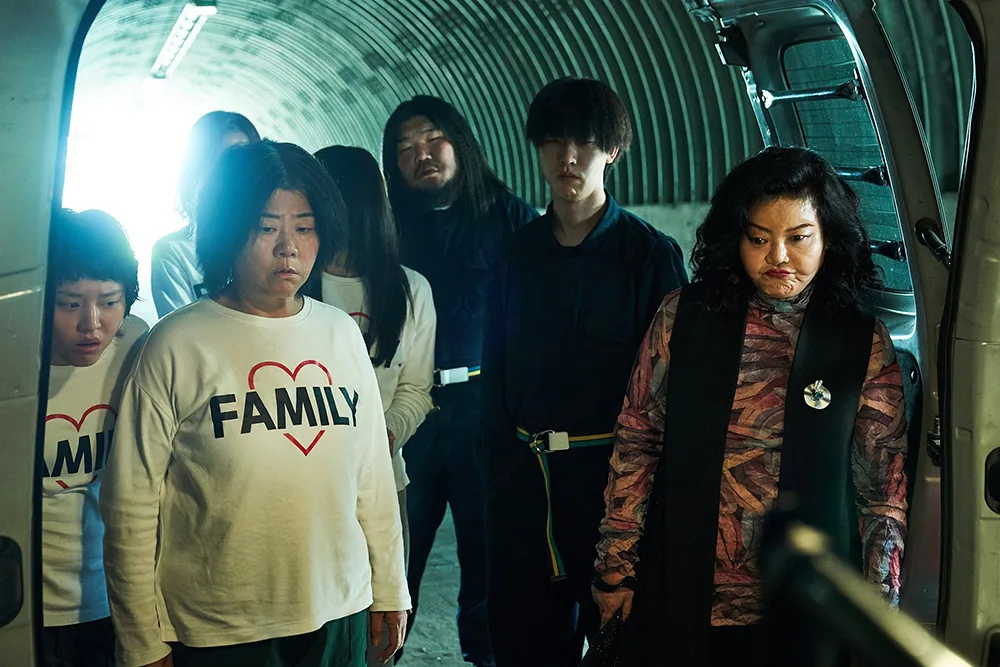
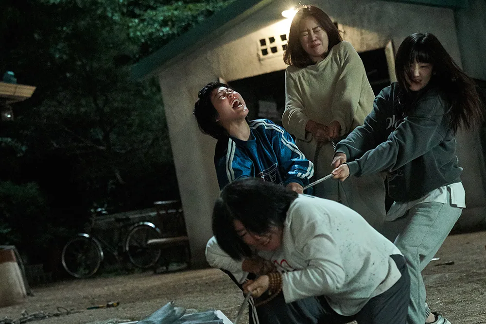
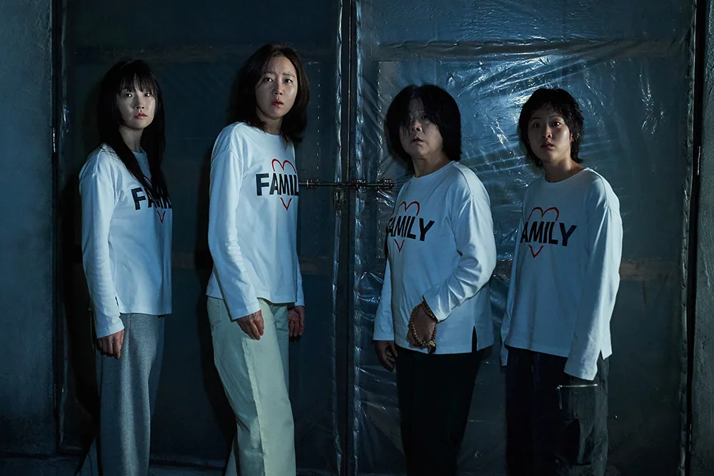
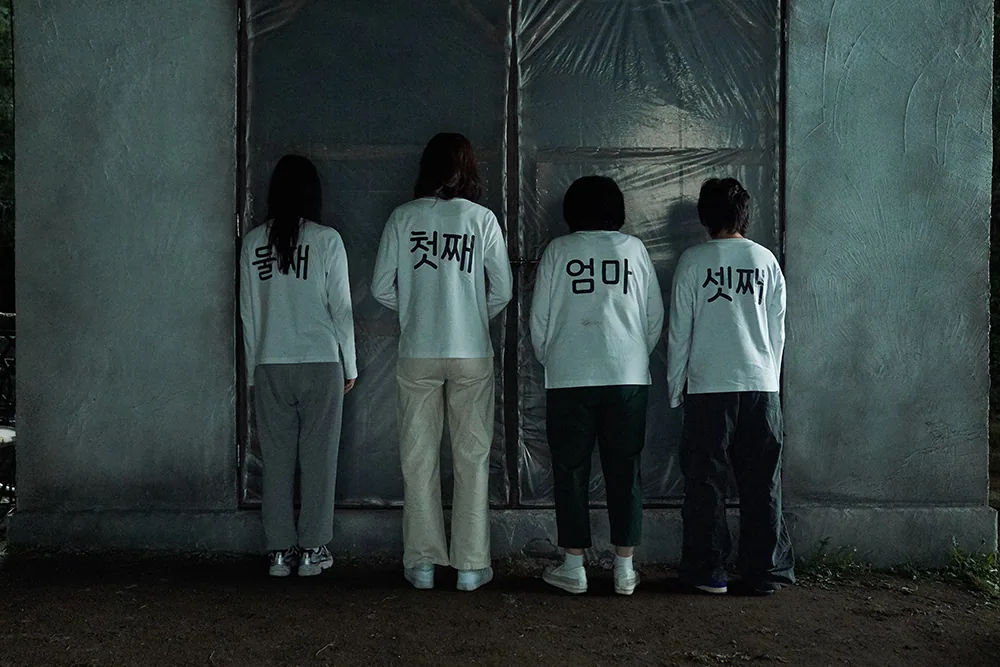

* 이 글은 스포일러를 포함하고 있습니다.
<스파이더맨: 브랜드 뉴 데이>와 <오디세이>가 박스오피스를 뒤덮은 사이, 웰메이드 복수극으로 호평받고 있는 한국영화 한 편이 개봉한다. 전주국제영화제 한국 경쟁 부문 대상을 받은 독립영화 <갈매기>(2021)의 김미조 감독이 5년 만에 내놓는 상업영화 데뷔작 <경주기행>이다. 오래전 막내를 잃은 가족이 가해자를 납치해 경주로 데려간다. 그들의 여행은 독특한 구조와 리듬으로 관객에게 깊은 속내를 드러낸다. 남아 있는 이들은 무엇을 견디고 잃었는가. 다시 행복해지기 위해 무엇을 해야 할까. 엄청난 규모의 복수극은 아니지만, 자기만의 방식에 대한 믿음이 뚜렷한 이야기가 지닌 위로와 치유의 방식에 설득된다는 반응이 크다. 김세윤 작가와 차한비 기자가 <경주기행>이 지닌 다양한 매력과 뜻밖의 아쉬움을 주고받았다.
Q 영화 <경주기행>의 첫인상은 어땠나? 어떤 감정이 가장 크게 남았는지?
차한비 리버스 기자(이하 차한비 기자) 조마조마하면서도 즐겁게 봤다. 약간 덜컹거리는 느낌으로 시작하는데 중반 이후부터는 ‘감독이 이런 걸 하고 싶었구나’ 하는 것들이 느껴져서 재밌게 봤다. 복수극의 외형을 빌린 가족 코미디인 줄 알았는데 결국엔 통쾌함보다는 애틋함, 처절함이 남았다.
김세윤 <FM영화음악 김세윤입니다> DJ 겸 작가(이하 김세윤 작가) ‘저 가족 이제 어떻게 해야 하지?’, ‘그 다친 캐릭터 어떻게 됐지?’ 아마도 만들어지지 않을 속편에 대한 이야기를 혼자 상상하면서 집에 왔다. <경주기행>의 가족이 승리한 건지 패배한 건지 아직 결론은 못 내렸다. 영화 <싱 스트리트>(2016)에 나오는 ‘행복한 슬픔’이라는 말처럼, <경주기행>에서 가족의 결말은 패배라고 해도 승리한 패배, 승리라고 해도 패배한 승리일 텐데. 그런 생각들을 하다 보니 감정보다 질문이 더 많이 남은 영화였다.
Q <경주기행>은 엄마와 세 자매까지 여성으로 이루어진 4인 가족의 복수극이다. 시작부터 기존의 복수극과는 다른 설정들로 달려간다. 어떤 설정들이 특히 의미 있다고 보았나?
김세윤 작가 복수극이 로드무비가 될 때는 보통 일을 저지른 후 도망치는 과정에서 로드무비가 되지 않나. <경주기행>은 반대다. 일을 저지르려고 가는 로드무비다. 이렇게 기존의 방식을 뒤집은 게 결국 감독이 무엇을 중요하게 생각하는지 말해 준다. 함께 가는 동안 가족들 사이에서 어떤 일, 어떤 변화가 일어나는지 그리겠다는 목표가 보인다. 그런데 영화를 보다 보니 <미스 리틀 선샤인>(2006)이 자꾸 떠올랐다. 떠나서 하는 일은 또 <친절한 금자씨>(2005)라니.(웃음) 로드무비라는 설정보다 로드무비를 배치하는 방식이 더 재미있었다.
차한비 기자 나도 <미스 리틀 선샤인>을 떠올렸다. 노란 승합차가 임시 피난처 같기도 하고, 가족 회의실처럼 보이기도 해서 겹쳐 보이는 면이 있었다. <경주기행>에서는 끝까지 서툴고 흔들리는, 벌레 한 마리도 못 죽이는, 복수에 전혀 적합하지 않은 사람들이 나온다. 그들이 가족이라는 이름으로 공동의 여정을 수행해야만 하는 상태에 놓인다는 설정 자체가 흥미로웠다.
복수극 하면 박찬욱 감독의 ‘복수 3부작’이 떠오른다. <경주기행>에서 복수를 실행하는 주체와 조력자가 다 여성이라는 점에서 <친절한 금자씨>, 아이를 잃은 가족이 가해자를 응징한다는 점에서는 <복수는 나의 것>(2002), 한 가지 목표를 향해 달린다는 점에서는 <올드보이>(2003)가 떠올랐다. 엄마 옥실 역 이정은 배우의 헤어스타일을 보면서 ‘<올드보이>의 오대수(최민식) 헤어 아닌가?’ 했다.(웃음) 레전드 복수극이 정교한 설계와 미학적인 쾌감에 집중한다면, <경주기행>은 일상극이자 소동극, 가족 로드무비로서의 복수극을 보여 주는 차별점이 느껴진다.
Q 앞서 얘기됐듯이 주인공들의 여행이 누군가를 ‘죽이러 가는’ 여행이고, 그 목적은 ‘가족을 위한 사적 복수극’이라는 사실을 관객이 금세 알게 한다. 이런 방식이 어떤 효과를 만들었을까?
차한비 기자 대개의 복수극은 트렁크 안에 누가 있나, 앞으로 무슨 일이 벌어질까 하는 것으로 이야기를 끌고 간다. <경주기행>은 이 사람들이 진짜 끝까지 갈 수 있느냐가 포인트다. 여행도 여러 가지로 해석된다. 가족의 막내 경주가 못다 한 여행을 마치는 것일 수도 있다. 그런데 진짜 중요한 여행은 이 가족의 삶에 다시 재시동을 거는 것, 막내 경주를 잃었던 8년 전에 멈춰 있던 그들을 현재로 끌고 와 지금 여기에 놓이게 하는 여정이다. 가족이 그 8년을 견디는 방법이 각각 달랐다는 것, 복수를 두고 세 딸들이 각각 다른 생각을 하고 있었다는 것을 보여 주는 것도 좋았다. 사적 제재 서사가 지닌 한계나 딜레마를 강건하게 극복해 나가려는 데에서 느껴지는 반가움도 있었다.
김세윤 작가 복수극에서 가장 중요한, 복수의 대상을 어떻게 찾아내고 납치할까의 과정이 오프닝에서 다 나와 버리니 관객이 스릴러에 대한 기대를 접게 하는 효과가 있었다. 흩어진 가족을 다시 뭉치게 하기 위해 까만 비닐봉지를 뒤집어씌워 놓은 범인이 필요할 뿐이라는 식의 오프닝으로 <나 홀로 집에>(1991)처럼 즐거운 가족 코미디가 전개될 거라는 기대를 품게 한다. 그런데 그걸 중간에 다시 비트니까 훨씬 재미있었다. 복수하러 가는 이야기면서 복수는 별로 중요하게 다루지 않을 것만 같더니, 의외로 복수에 매우 공을 들인다. 복수의 대상을 납치했다가 우당탕탕 지나가려는 줄로만 알았는데. 하긴, 그러기만 했다면 그 역할에 변요한을 캐스팅하지 않았겠지.(웃음)


Q 가족의 막내 경주의 죽음을 마주해야 했던 8년 전 과거와 현재를 오가는 연출 방식은 어떠했나? 이 영화만의 독특한 장치가 있다고 할 수 있을까?
김세윤 작가 형사들이 가족이 살았던 옛 동네를 찾아가는데, 그들 옆으로 (이미 죽은) 경주가 처음 자전거를 타고 등장하는 장면은 사실 슬프다. 이 영화에서 경주가 나오는 모든 장면은 과거이면서 미래 같다. 현실이 과거처럼 보이는 연출이라고 할 수도 있고. 실제로 이런 느낌을 의도한 연출이 영화 후반부에도 나오지만, 경주가 나오는 장면은 의도적으로 꿈처럼 연출되어 있다. 특히 엔딩의 연출은 이 가족에게 그때의 기억이 조금은 달라질 수 있지 않을까 하는 희망을 주지 않나 싶다.
차한비 기자 과거를 보여 주는 이 영화의 플래시백은 볼 때도 그랬고 말하면서도 슬프다. 경주가 수학여행을 갔다가 돌아오지 못했는데, 집으로 돌아오지 못한 아이에 대해 우리 사회가 겪은 수많은 직간접적 경험들이 있으니까. 엔딩에서는 거의 같은 장면을 두 번 반복해서 보여 주는데, 단순하고 직접적인 위로로 다가온다. 이 영화의 플래시백은 이 가족이 과거의 시간에 계속 갇혀 있었음을 드러내는 것 같아서 반복될수록 슬픈 감정이 더 올라왔다.
그리고 가족들, 특히 엄마 옥실의 트라우마를 다루는 데 있어서 이 영화가 꽤나 정성을 보인다. 옥실이 딸들 가운데 한 명이라도 안 보이면 난리를 치고, 자다가 일어나서 자고 있는 가족들 숫자를 세고, 코 밑에 손을 갖다 대고 숨을 확인하는 행동들 같은 것을 차곡차곡 쌓아 둔다. 그런 장면들이 과거이자 어쩌면 존재하지 않는 미래 같은 플래시백과 연동됐을 때, 그 시간이 원망과 자책과 슬픔으로 너무나 버거운 시간이었겠구나 하는 느낌이 확 다가온다.
김세윤 작가 ‘수학여행’이라는 키워드가 어쩔 수 없이 세월호를 떠올리게 한다. 경주가 존재했던 시간이 영화 <너와 나>(2023)와 같은 시간을 그리는 듯했다. 그래서 경주가 등장하는 시간을 꿈처럼 그리는 것이 이 영화의 지향점을 보여 주는 단서 중의 하나다. 그간의 여러 한국 스릴러영화들의 경우였다면 경주가 8년 전 어떻게 비참하고 억울하게 죽었는지를 보여 주는 데 플래시백을 사용했을 것이다. 그걸 본 관객이 ‘저놈 죽여!’ 하는 마음으로 복수극에 동참하게 만드는 연출법이 많은 한국 스릴러영화들의 방식이었다. 하지만 <경주기행>은 과거를 그릴 때 사건을 재현하지 않는다. 이 여행의 끝에서 관객이 보게 될 것은 복수가 아니라 치유일 것이라는 태도가 명확하게 드러난다.


Q 가족여행의 기착지인 경주는 배경이자 서사적 의미를 지닌 장소로 잘 기능했을까?
김세윤 작가 경주에 가 본 지 오래됐다. 영화를 보는데 <걸어서 세계 속으로>(KBS)를 보는 느낌도 들었다.
차한비 기자 이 영화가 경주에 오래전에 가 본 김세윤 작가 같은 관객도 타깃으로 했다고 생각한다.(웃음) 경주를 10대 때 수학여행 간 곳 정도로만 기억하는 세대들. 요즘은 영화에도 나오듯 수학여행지로 해외를 선택하기도 하지 않나. 말하자면 부모 세대까지 같이 보게 하려는 의도라고 할까.
김세윤 작가 일본으로 갔으면 복수를 못한다. 범인을 비행기에 어떻게 싣고 가겠나. 제주로 해도 복잡하다. 어떻게 배에 태우나.(웃음) 장률 감독이 영화 <경주>(2014) 시나리오를 쓴 이유가 도시 전체가 무덤인 것이 너무 흥미로웠기 때문이라고 한다. <경주기행> 역시 막내의 이름이 경주이기도 하지만, 장률 감독도 얘기했던 경주라는 도시의 특성과 이 영화가 잘 어울리기에 한 선택 같다.
차한비 기자 경주는 기본적으로 죽음과 시간이라는 걸 품고 있는 도시다. 당연히 예상한 룩이었지만 가족들의 승합차가 경주에 입성해서 온갖 군데 ‘경주’가 붙은 간판과 표지판이 있는 곳을 지나가는데 마음이 쿵 내려앉더라. 그래도 경주라는 장소를 지금보다는 더 적극적으로 활용했으면 영화가 풍성해지지 않았을까 하는 아쉬움이 있긴 하다.
Q 가족의 앙상블이 확실히 중요하다. 엄마 옥실 역 이정은과 세 자매 공효진, 박소담, 이연까지 배우들이 각자에게 맡겨진 몫을 어떻게 소화했다고 보나?
김세윤 작가 단점이 분명히 있지만 장점이 훨씬 더 커 보이는 영화이다. 거기에 크게 기여하는 게 배우들이다. 복수를 해 나가는 과정에서의 덜컹거림과 약간의 클리셰가 있다 해도 모든 배우들에게 각자의 시퀀스를 하나씩 만들어 주면서 결국 잘 해냈다고 생각한다. 특히 첫째 장주 역의 공효진 배우의 연기가 굉장히 좋았다. 쉽지 않은 역할이다. 야구로 치면 선발 투수 같은 느낌? 영화를 본 사람들이 첫째 캐릭터에 대해 많이 얘기하지 않을 수 있지만, 이 영화 이야기를 많이 한다면 그건 공효진 배우의 역할이 꽤 크다고 생각한다. 부담이 큰 역할로 따지면 프로레슬러 셋째 동주 캐릭터를 연기한 이연 배우의 부담이 꽤 컸을 것 같다. 그래도 전체적으로 가족 밸런스가 좋다. 스토리에서 밸런스가 기울거나 무너질 뻔한 순간들이 생겨도 가족 밸런스의 힘, 코어의 힘으로 위기의 순간들을 넘어간다.
차한비 기자 첫째에게는 상황도 극적으로 주어지는 게 없는데 공효진 배우가 자기만의 스포트라이트 신을 받았을 때 너무 잘 소화해 낸다. 이정은 배우의 연기도 내내 신기했다. 계속 눈이 텅 비어 있고, 잃어버린 아이를 너무 보고 싶고 만지고 싶어 하는 것을 저런 몸짓으로도 표현하는구나 싶었다. 그 연기에 계속 밸런스를 맞춰주는 게 또 공효진 배우다. 자매들 캐릭터를 보면 둘째 영주 역의 박소담이 브레인, 셋째 이연이 행동파, 첫째 공효진이 조력자 역할이다. 그런 면에서 캐릭터 무비로도 괜찮았다. 캐스팅을 잘하는 건 진짜 연출의 능력이라는 것을 새삼 느꼈다.
김미조 감독이 실제 네 자매다. 가족 구성원만 따온 게 아니라 영화 속 가족에게 김미조 감독의 모습이 조금씩 반영되어 있다. 둘째가 법대를 다니다가 그만둔 설정인데 실제 감독이 그랬고. 본인이 막내인데 영화를 위해 누구도 못 죽이겠으니 자기 자신을 죽인 것 같다.(웃음) 캐릭터만 놓고 보면 기능적이라고 할 법하지만, 가족들이 서로 어떻게 대하느냐가 인물들의 대화에서 잘 드러난다. 그러니까 배우들의 합도 좋았지만 시나리오도 이미 그런 부분을 충실하게 반영하지 않았나 싶다. 조연 배우들도 잘 활용했다. 옥실을 도와주는 필례는 남권아 배우를 몰랐으면 만들 수 없었던 캐릭터 같다. 김정영 배우가 형사로 나와서 없던 긴장감이 조금 생기는 부분이 있었다.


Q 김미조 감독의 데뷔작 <갈매기>에서는 무너지지 않기 위한 주인공 오복(정애화)의 각성이 있었고, <경주기행>에서는 ‘끝까지 가기 위해’ 엄마 옥실의 고통이 부각된다. <갈매기>에서 <경주기행>으로 이어지는 감독의 시선을 읽어 본다면?
차한비 기자 2021년 <갈매기>가 개봉했을 때 감독이 이미 모녀 합동 복수극을 쓰고 있다고, 복수라는 키워드에 매몰되기보다 관계나 감정을 다뤄 보고 싶다고 인터뷰했더라. <갈매기>와 <경주기행>은 모녀, 관계, 감정뿐 아니라 생존, 투쟁이라는 키워드도 겹친다. <갈매기>의 오복과 <경주기행> 옥실의 공통점은 그들을 제외한 나머지 사람들은 적당히 하고 넘어가자고 하는데, 그게 안 돼서 부여잡고 끝까지 가 보려고 한다는 거다. ‘내게 있었던 일을 없었던 일로 하지 않을 거야’라는 거다. 영화를 영화답게 만드는 포인트이자, 김미조 감독만의 화두, 영화를 대하는 태도 같다.
<갈매기>에서 <경주기행>으로 규모를 이만큼 키운 것도 칭찬받을 만하다. 투쟁의 단위를 모녀와 가족으로 확장한 동시에 추적극, 스릴러, 복수 액션까지 다양하게 시도했다. 그 와중에 내가 잘하는 것을 잊지 않고, 감당할 수 있는 규모로 상업 데뷔를 해 보겠다는 패기도 느껴져서 좋았다.
Q 가장 인상적인 장면과 아쉬운 장면은 무엇인가?
차한비 기자 어느 한 장면보다는 전체적인 리듬이 아쉽다. 그런데 그게 또 크게 거슬리지 않았던 것은, 어떤 면에서는 이 이야기가 너무 매끄러우면 안 될 것 같긴 했다. 서사 자체가 딜레마의 연속이니까. 연비가 안 좋은 차처럼 약간 덜컹대니까 웃다가 어색했다가 지지했다가 몸을 사리게 되는데, 그게 이 영화가 의도한 것이라고 믿어 주고 싶은 마음이 있다.(웃음)
김세윤 작가 가족이 나오는 장면은 다 좋았다. 심지어 덜컹거리는 순간조차. 다만 개인적으로는 가족의 복수의 대상인 백상현(변요한)이 새로운 범죄를 저지르지 않았으면 영화적으로 더 복잡한 감정을 자아낼 수 있었을 것 같다. 엄마 옥실이 행하는 복수에 관객이 공감하게 하기 위해서, 백상현이 유족을 먼저 죽이려고 했고 심지어 추가 범행을 저질렀다는 설정으로 명분을 만들어 준다. 그런 명분 없이 정말 살려 달라고 애원하는 살인범을 엄마가 마주했다면 영화가 더 입체적이었을 거다.
이 영화에서 가장 기능적으로 쓰이는 캐릭터가 경찰들이다. 백상현이 경주의 가족들을 먼저 찾아서 죽이려고 했다는 설정을 말해 주기 위해 존재할 뿐이다. 상업영화로서의 안전장치라고 할까. 가족에 집중하고 옥실이라는 캐릭터의 힘을 끝까지 유지하는 건 큰 장점인 반면, 주변 인물과 주변 서사의 퍼즐을 맞추는 것은 헐겁다. 옥실 가족을 위해 백상현의 납치를 도와주는 필례도 쉽게 사라진다. 그런데 이런 허점들은 이 영화가 가족들과 관객을 동기화하는 데 성공하면 받아들여지는 것들이다. 거기에 영화의 성패가 달렸다고 본다. 아, 좋았던 장면을 하나 추가하자면 셋째 동주가 도굴꾼으로 몰려서 경찰서에 잡혀 왔을 때다. 지금 심정을 묻자 “조까!”라고 대답하는 거.(웃음)
Q 결말로 가는 방식도 독특하다. 그 선택은 어떻게 보았나?
김세윤 작가 나는 이 영화의 엔딩이 세 개라고 봤다. 셋째 동주가 백상현에게 초크를 걸어서 실신시키고 경찰들이 달려오는 장면이 사실상 첫 번째 엔딩이다. 많은 이들은 여기서 이야기가 끝난다고 생각할 텐데, 그다음 신, 또 그다음 신이 있다. 그러니까 경찰들이 달려온 이후, 컷이 바뀌면 옥실이 누구의 방해도 받지 않고 백상현을 혼자 끌고 간다. 그 결정적인 순간에 최소한의 개연성은 챙겨 줘도 좋지 않았을까. 경찰이 그렇게 많이 왔는데. 앞부분의 덜컹거림은 받아들일 수 있는데, 엔딩으로 가는 이런 혼란스러운 연결은 아쉬움이 남는다.
차한비 기자 옥실이 백상현을 어떻게 대하는지 보려고 여기까지 왔구나 싶어서 엔딩을 납득하긴 했다. 클라이맥스 신은 이미지가 너무 인상적이다. 복수를 하려면 나도 거의 죽어야 한다는 각오로 옥실이 온몸으로 백상현을 끌고 올라간다. 손톱이 짓이겨질 만큼 힘들다. 쾌감이 넘치는 복수가 아니다. 그때 옥실과 백상현이 완전히 등 돌린 구도다. 옥실이 죄를 짓는 순간인데 너무 속죄하는 사람처럼 보이는 거다. 그 때문에 긴장도가 확 올라가지만 동시에 맥이 풀리는 느낌도 받았다. 그런 아이러니가 이 영화에서 가장 좋았다고 말해야 할지 가장 아쉬웠다고 말해야 할지. 계속 곱씹게 된다.
<경주기행> 메인 예고편
Q 결국 <경주기행>은 YES인가 NO인가.
김세윤 작가
YES.
최근 한국영화들을 보면서 한국 감독들의 이야기가 한정적이라는 생각을 많이 한다. 소재가 학교폭력, 가정폭력, 성폭력 안에서 무한 반복되고 있다. 특히 데뷔작 혹은 두 번째 영화를 만드는 감독들의 이야기가 그렇다. 자신이 학교 다닐 때의 이야기 혹은 자기 가족 이야기에서 벗어나지 못한다. 그 와중에 <경주기행>은 소재 자체는 비슷할 수 있으나 그걸 풀어내는 방식에서 자기만의 색깔을 살리고 새로운 형태를 시도했다는 점에서 반가움이 크다.
차한비 기자
YES.
오랜만에 기세와 정성을 고루 장착한 신인이 등장했다. 복수의 여정을 통해 애도를 시작하는 한 가족의 모습을 다룬 영화라는 점에서도 좋았다. 그래서 엔딩을 자꾸 생각해 보게 된다. 그런 일이 있고 난 후 비로소 꿈을 꿀 수 있게 되는 사람의 마음은 어떤 걸까. 꿈에서라도 만져 보고 끌어안아 보는 엄마의 마음이라는 건 어떤 걸까. 이런 질문거리들을 던져 주어서 고맙다.